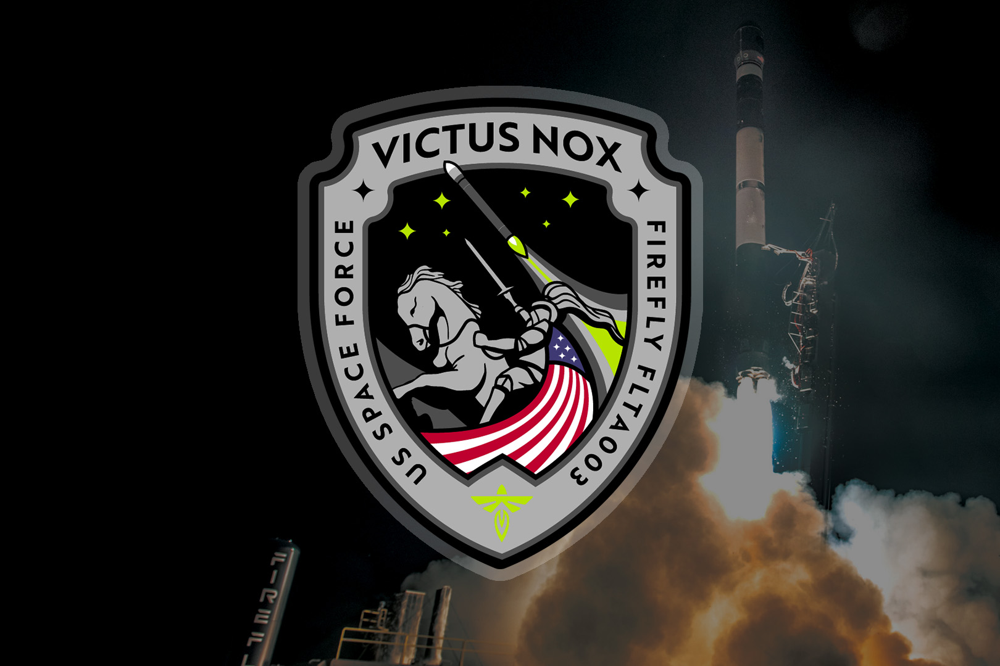

August 21, 1965 - Gemini 5 was a crewed spaceflight mission for NASA's Project Gemini. It's mission patch symbolizes the pioneering effort that the mission would pave for future spaceflight missions.July 16, 1969. - Apollo 11 was the first mission that landed humans on the Moon. It's mission patch symbolizes this historic achievement, depicting an eagle landing on the lunar surface in peace.January 9, 1990 - STS-32's primary objective was the deployment of SYNCOM IV-F5 defense communications satellite and retrieval of NASA's Long Duration Exposure Facility (LDEF). The patch depicts the space shuttle orbiter rendezvousing with the LDEF satellite from above and other science experiments conducted.November 30, 2000 - STS-97 was the second space shuttle flight to the International Space Station (ISS). Its patch commemorates the crew's mission of installing the first set of solar arrays to the ISS. July 8, 2011 - STS-135 carried the Raffaello multipurpose logistics module to deliver supplies, logistics and spare parts to the International Space Station. STS-135 was also the final Space Shuttle mission. January 17, 2016 - Jason-3 was a mission to maintain observations of global sea surface heigts that begain in 1992. This SpaceX patch depicts the rocket flown, a view of the spacecraft, a glimpse of the launch site on the map, and a four-leaf clover for good luck.July 28, 2016 - NROL-61 was a launch for the National Reconnaissance Office in support of national defense. The patch features the mission mascot Spike the Lizard riding the Atlas V 421 rocket into space. The stars represents the teams from various agencies who contributed to the project.November 20, 2020 - Rocket Lab's Return to Sender mission deployed various satellites for several small satellite operators. This mission was the first time that Rocket Lab attempted to bring Electron's first stage back under a parachute for a water landing in hopes for reusability. The patch and mission name embodies these sentiments with a postage stamp depiction.May 2, 2022 - Rocket Lab's There and Back Again mission deployed satellites to a sun synchronous orbit for a variety of customers. The patch and mission name embodies their attempts for a recovery mission as they attempted to catch Electron's first stage's parachute with a helicopter.May 30, 2020 - SpaceX's Crew Dragon Demo-2 mission was the first crewed test flight of the Crew Dragon spacecraft and carried two astronauts to the International Space Station. It was the first crewed spaceflight from the US, since the final Space Shuttle mission in 2011. The patch depicts a view of the new astronaut helmet and suit with a glimpse of the International Space Station in the reflection.

September 14, 2023 - Firefly Aerospace's Victus Nox mission launched for the US Space Force with a 24-hour notice to demonstrate the capability to rapidly respond to on-orbit needs. The patch depicts a knight riding off into the night in the direction of the rocket in flight.September 19, 2023 - Rocket Lab's We Will Never Desert You mission deployed a synthetic aperture radar (SAR) Earth imaging Acadia satellite for Capella Space. The patch design depicts a desert seen being captured with a family of wolves watching over their young one.